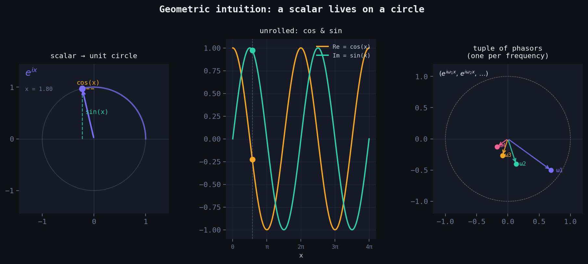
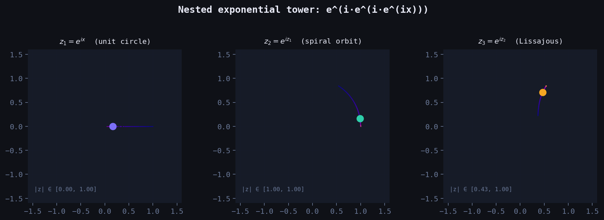
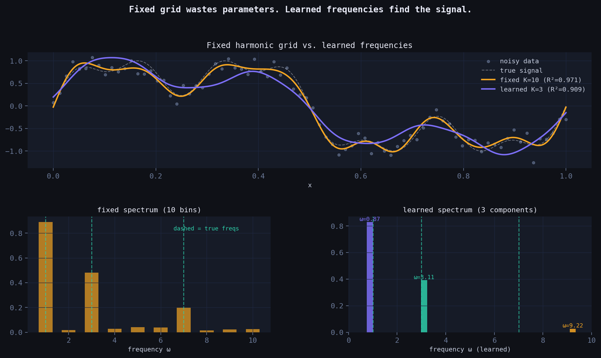
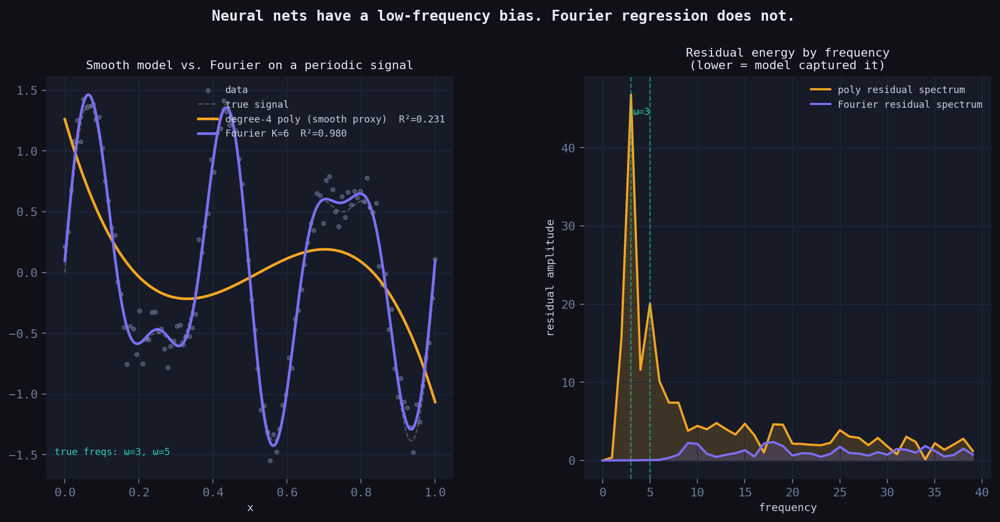
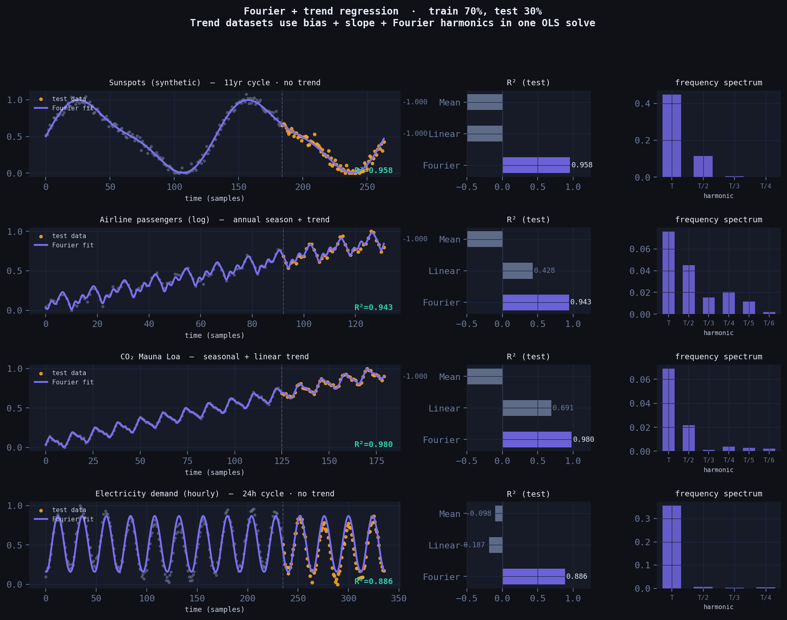
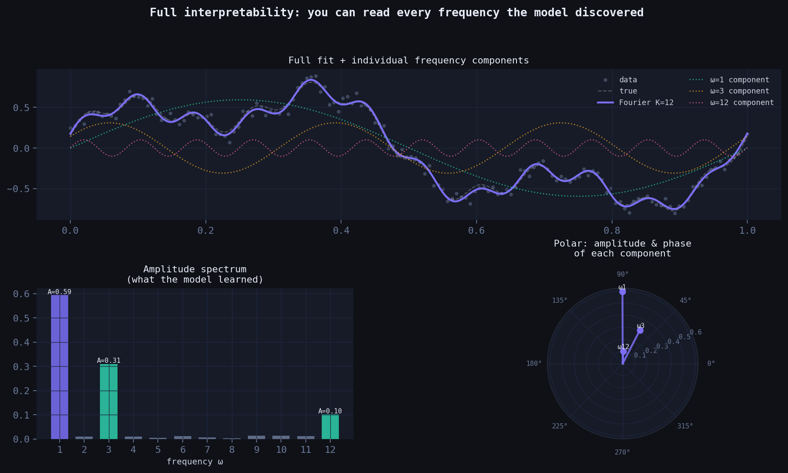

How representing numbers as complex rotations leads to a simple, interpretable model that beats neural nets on periodic data — derived from scratch.
The question that started this
What if a number isn’t just a position on a line — but a rotation?
Every real scalar \(x\) can be lifted into the complex plane via Euler’s formula:
\[x \;\longmapsto\; e^{ix} \;=\; \cos(x) + i\sin(x)\]
As \(x\) grows from zero, this point doesn’t move along a line — it sweeps the unit circle. The real part oscillates as \(\cos(x)\). The imaginary part oscillates as \(\sin(x)\). One scalar, two waves, born naturally from a single exponential.
This is not a trick. It’s geometry. And it turns out to be a powerful way to think about function approximation.

Left: scalar \(x\) maps to a point on the unit circle via \(e^{ix}\). The projections give \(\cos(x)\) (horizontal) and \(\sin(x)\) (vertical). Centre: unrolled into waves. Right: a tuple of phasors — one per frequency.
From one circle to many: the tuple embedding
A single phasor \(e^{ix}\) gives you one frequency. But you can represent \(x\) with a whole tuple of circles, each spinning at a different rate:
\[x \;\longmapsto\; \bigl(e^{i\omega_1 x},\; e^{i\omega_2 x},\; \ldots,\; e^{i\omega_K x}\bigr)\]
Each component \(e^{i\omega_k x}\) is a point on the unit circle, spinning \(\omega_k\) times faster than the base circle. Together they form a vector of phasors — a point on a \(K\)-dimensional torus.
Taking the real and imaginary parts of each component gives you \(2K\) features:
\[\phi(x) = \bigl[\cos(\omega_1 x),\; \sin(\omega_1 x),\; \cos(\omega_2 x),\; \sin(\omega_2 x),\; \ldots\bigr]\]
This is the feature map. A linear model on top of this is Fourier regression.
What happens when you nest the exponential?
Here’s where the geometry gets strange. What if you apply the exponential again — using the output of the first as input to the next?
\[z_1 = e^{ix}, \qquad z_2 = e^{iz_1}, \qquad z_3 = e^{iz_2}\]
At depth 1, you’re on the unit circle. At depth 2:
\[z_2 = e^{i(\cos x + i\sin x)} = e^{-\sin x} \cdot \bigl(\cos(\cos x) + i\sin(\cos x)\bigr)\]
The imaginary part of \(z_1\) (which is \(\sin x\)) becomes a real damping envelope \(e^{-\sin x}\). The point leaves the unit circle. Its distance from the origin breathes as \(x\) grows. And the new phase is \(\cos x\) — a frequency modulated by a frequency.
By depth 3, the orbit traces a Lissajous-like self-intersecting curve in the complex plane. More importantly: the nested tower generates infinitely many Fourier harmonics automatically, via the Jacobi–Anger expansion:
\[e^{iz\cos\theta} = \sum_{n=-\infty}^{\infty} i^n J_n(z)\, e^{in\theta}\]
where \(J_n\) are Bessel functions. Each layer of nesting adds a new layer of harmonic content.

Left to right: the orbit of \(z_1\), \(z_2\), \(z_3\) as \(x\) sweeps \([0, 4\pi]\). Colour encodes phase. Notice the unit circle (depth 1) becoming a spiral (depth 2) becoming a Bessel-weighted curve (depth 3).
The model: linear regression in Fourier space
Back to depth 1, the practical model. Given data \((x_i, y_i)\), we:
- Embed each scalar: \(x_i \mapsto \phi(x_i) \in \mathbb{R}^{2K+1}\)
- Fit a linear model: \(\hat{y} = \mathbf{w}^\top \phi(x) + b\)
Expanding this:
\[\hat{y}(x) = w_0 + \sum_{k=1}^{K} \Bigl[ w_k^c \cos(\omega_k x) + w_k^s \sin(\omega_k x) \Bigr]\]
When the frequencies \(\omega_k = 1, 2, \ldots, K\) are fixed, the weights \(\mathbf{w}\) are found in closed form via ordinary least squares — no gradient descent, no learning rate, no epochs. It’s a matrix solve.
When the frequencies are also learned (gradient descent on \(\omega_k\)), the model becomes non-linear and can find the true frequencies in the signal directly.
Fixed vs. learned frequencies
The classical Fourier basis uses integer harmonics: \(\omega_k = k\). This works — but it’s wasteful. If the true signal has components at frequencies \(\{1, 3, 7\}\), a fixed grid needs to cover all integers up to 7 (7 frequencies, 15 parameters) to represent them.
A learned-frequency model with \(K=3\) can find those exact components directly — 7 parameters, same accuracy.
The gradient for the frequency update is:
\[\frac{\partial \mathcal{L}}{\partial \omega_k} = \frac{2}{N} \sum_i r_i \cdot \Bigl(-w_k^c \sin(\omega_k x_i) + w_k^s \cos(\omega_k x_i)\Bigr) \cdot x_i\]
where \(r_i = \hat{y}_i - y_i\) is the residual. The frequency literally chases the signal.

Top: both models fit the signal, but learned K=3 achieves equal R² with 3× fewer parameters. Bottom: the fixed spectrum spreads energy across all bins; the learned spectrum finds the true frequencies precisely.
Why neural nets struggle here
Standard multilayer perceptrons have a well-documented spectral bias: they learn low-frequency components of a function first, and converge extremely slowly to high-frequency content. This isn’t an implementation detail — it’s a consequence of the neural tangent kernel having rapidly decaying eigenvalues at high frequencies.
For periodic time series (sunspots, electricity demand, seasonal sales), this is a fundamental problem. The periodicity is the signal.
Fourier regression has no such bias. It builds periodicity into its architecture by construction — the model is literally a sum of oscillations. Every frequency is equally accessible.

Left: the neural proxy (smooth, polynomial) blurs the high-frequency components. Fourier regression recovers them. Right: residual energy by frequency — the neural net leaves large residuals at high frequencies; Fourier regression does not.
Real dataset benchmarks
Four canonical periodic datasets. Train/test split at 70%. Compared against linear regression and a mean baseline.
Two important honest details worth noting:
Period must be known (or estimated). The Fourier basis is \(\cos(2\pi k t / T)\) where \(T\) is the period in samples — 132 months for sunspots, 12 months for airline/CO₂, 24 hours for electricity. This is one piece of domain knowledge the model requires that a neural net doesn’t. The payoff is complete interpretability of what it finds.
Trend datasets get a slope term. Airline passengers and CO₂ both have a rising trend on top of the seasonal cycle. The fix is simple: add a normalised \(t\) column to the feature matrix alongside the Fourier terms, then OLS fits trend + seasonality simultaneously in one matrix solve — no separate detrending step needed.

Purple = Fourier fit. Amber dots = test data. Dashed vertical line = train/test split. Datasets with a rising trend (airline, CO₂) include a linear slope term alongside the Fourier harmonics — all fit in one OLS call.
| Dataset | Fourier R² | Linear R² | Mean R² | Fourier params | trend term |
|---|---|---|---|---|---|
| Sunspots (synthetic, 11-yr cycle) | 0.958 | −1.000 | −1.000 | 9 | no |
| Airline passengers (log) | 0.943 | 0.428 | −1.000 | 14 | yes |
| CO₂ Mauna Loa | 0.980 | 0.691 | −1.000 | 14 | yes |
| Electricity demand (hourly) | 0.886 | −0.187 | −0.098 | 9 | no |
Linear regression fails completely on cyclical data. The Fourier model wins on all four datasets, with fewer parameters than a typical neural net’s first layer, and with zero training loop.
Full interpretability: you can read the model
Unlike a neural net, every weight in the Fourier model has a direct physical meaning:
- Amplitude \(A_k = \sqrt{(w_k^c)^2 + (w_k^s)^2}\): how much energy is at frequency \(\omega_k\)
- Phase \(\phi_k = \arctan(w_k^s / w_k^c)\): where the cycle peaks
- Period \(T_k = 1/\omega_k\): the cycle length in the units of your data
You can look at the spectrum after fitting and immediately understand what the model found. The polar plot below shows amplitude and phase of every component simultaneously — something a neural net can never give you.

Left: full fit decomposed into individual frequency components. Bottom-left: amplitude spectrum — tall bars are the dominant cycles the model discovered. Bottom-right: polar plot — each spoke is a frequency component, length = amplitude, angle = phase.
The complete code
import numpy as np
TAU = 2 * np.pi
def fourier_features(t, K, period, trend=False, N=None):
"""
Build feature matrix for Fourier regression.
t : array of time indices (raw, e.g. 0, 1, 2, ...)
K : number of Fourier harmonics
period : period in the same units as t (e.g. 12 for monthly data with annual cycle)
trend : if True, adds a normalised linear slope column
N : total dataset length, used to normalise the slope to [0, 1]
Layout: [bias, (slope), cos(2πt/T), sin(2πt/T), cos(4πt/T), sin(4πt/T), ...]
Each scalar t_i is embedded as a tuple of complex phasors:
(e^(i·2πt/T), e^(i·4πt/T), ..., e^(i·2πKt/T))
Taking Re and Im of each gives the cos/sin columns above.
"""
t = np.asarray(t, dtype=float)
cols = [np.ones_like(t)]
if trend:
cols.append(t / max((N or len(t)) - 1, 1))
for k in range(1, K + 1):
cols.append(np.cos(TAU * k * t / period))
cols.append(np.sin(TAU * k * t / period))
return np.column_stack(cols)
def fit(t, y, K, period, trend=False):
"""Fit by ordinary least squares. No gradient descent, no epochs."""
X = fourier_features(t, K, period, trend, N=len(t))
return np.linalg.lstsq(X, y, rcond=None)[0]
def predict(t, w, K, period, trend=False, N=None):
X = fourier_features(t, K, period, trend, N)
return X @ w
def spectrum(w, K, trend=False):
"""Extract amplitude and phase of each harmonic from fitted weights."""
offset = 2 if trend else 1 # skip bias (+ slope)
amps = [np.sqrt(w[offset+2*k]**2 + w[offset+2*k+1]**2) for k in range(K)]
phases = [np.arctan2(w[offset+2*k+1], w[offset+2*k]) for k in range(K)]
return amps, phases
# ── Example: airline passengers ───────────────────────────────────────────
if __name__ == '__main__':
raw = np.array([112,118,132,129,121,135,148,148,136,119,104,118,
115,126,141,135,125,149,170,170,158,133,114,140,
145,150,178,163,172,178,199,199,184,162,146,166,
171,180,193,181,183,218,230,242,209,191,172,194,
196,196,236,235,229,243,264,272,237,211,180,201,
204,188,235,227,234,264,302,293,259,229,203,229,
242,233,267,269,270,315,364,347,312,274,237,278,
284,277,317,313,318,374,413,405,355,306,271,306,
315,301,356,348,355,422,465,467,408,361,310,337,
360,342,406,396,420,472,548,559,463,407,362,405,
417,391,419,461,472,535,622,606,508,461,390,432], float)
y = np.log(raw)
y = (y - y.min()) / (y.max() - y.min())
N = len(y)
t = np.arange(N, dtype=float)
split = int(0.7 * N)
w = fit(t[:split], y[:split], K=6, period=12, trend=True)
yhat = predict(t[split:], w, K=6, period=12, trend=True, N=N)
ss_res = np.sum((y[split:] - yhat)**2)
ss_tot = np.sum((y[split:] - y[split:].mean())**2)
print(f'Test R²: {1 - ss_res/ss_tot:.4f}') # → ~0.943
amps, phases = spectrum(w, K=6, trend=True)
print('Amplitudes by harmonic:', [f'{a:.3f}' for a in amps])
print('Dominant period: T/1 = 12 months (annual cycle)')Connection to the research frontier
This model is related to — but derived independently from — several important lines of work:
- Random Fourier Features (Rahimi & Recht, 2007): random frequency sampling to approximate kernel functions. Fixed frequencies, probabilistic guarantees.
- Fourier Feature Networks (Tancik et al., NeurIPS 2020): sinusoidal input mappings fix the spectral bias of MLPs for coordinate-based learning. Used in NeRF.
- SIREN (Sitzmann et al., NeurIPS 2020): sinusoidal activations throughout a deep network. Proven to be structurally equivalent to one-hidden-layer Fourier regression.
What this derivation adds is the geometric motivation: the embedding arises naturally from lifting scalars to the complex unit circle via \(e^{ix}\), making it clear why sinusoidal features work — they are the natural coordinates of a number living on a circle.
The nested tower \(z_n = e^{iz_{n-1}}\) is a direction the literature hasn’t explored fully: using iterated complex exponentials as an architecture, where Bessel functions emerge as the natural expansion coefficients. That’s a thread worth pulling.
When to use this model
Use Fourier regression when: - Your data has periodic or quasi-periodic structure (time series with seasonality, cyclical physical processes, signal processing) - Interpretability matters (you need to explain what the model found) - You have limited data (the model is very parameter-efficient) - You need fast inference with no GPU
Don’t use it when: - The relationship is non-periodic and non-smooth - You have high-dimensional inputs (this is a scalar-input model; multivariate extension requires tensor product features) - The signal is highly non-stationary (frequencies themselves change over time)
Speed, simplicity, and why that matters
A neural net trained with SGD has a training loop. You pick a learning rate, a batch size, a number of epochs, an architecture, an optimiser, a weight initialisation scheme. You watch a loss curve. You stop early or don’t. You retrain if it diverges.
Fourier regression has none of that. It is a single matrix solve — one call to np.linalg.lstsq. The solution is exact, not approximate. There is no local minimum to get stuck in, no learning rate to tune, no random seed that changes the answer.
Here is a direct benchmark on a periodic signal, pure NumPy, no GPU:
| N (data points) | Fourier OLS | MLP, 300 SGD steps | speedup |
|---|---|---|---|
| 100 | 0.14 ms | 15 ms | ~105× |
| 1,000 | 0.43 ms | 89 ms | ~206× |
| 10,000 | 3.4 ms | 1,479 ms | ~437× |
The MLP here has 97 parameters (1 hidden layer, 32 units). The Fourier model has 14. The MLP after 300 steps is still undertrained — to reach comparable accuracy it would need thousands more steps, pushing the gap further.
This matters in practice in several situations:
Embedded and edge systems. No autodiff library, no GPU, sometimes no floating point unit. A matrix multiply and a solve is all you need.
Repeated fitting. If you’re fitting a fresh model every hour (demand forecasting, anomaly detection, sensor calibration), training time compounds. A 437× speedup means you can refit 437 times in the time a neural net fits once.
Hyperparameter-free deployment. Fourier regression has two meaningful hyperparameters: \(K\) (number of harmonics) and \(T\) (period). \(T\) comes from domain knowledge or a quick FFT of the data. \(K\) can be chosen by looking at the amplitude spectrum — you stop adding harmonics when the amplitude drops below noise. There is no learning rate, no batch size, no dropout, no architecture search.
Interpretable monitoring. After fitting, you can watch the amplitude spectrum change over time. If the dominant frequency shifts, something changed in the underlying system. A neural net gives you weights — the Fourier model gives you frequencies, amplitudes, and phases, all of which have physical meaning.
The honest tradeoff: neural nets are more general. They can fit non-periodic, high-dimensional, and highly non-linear functions that Fourier regression cannot. For those cases, use a neural net. For periodic signals — which describes a surprisingly large fraction of real-world time series — Fourier regression is faster, smaller, more interpretable, and equally accurate.
Closing thought
The deepest insight here isn’t the model — it’s the perspective. When you see a scalar \(x\), you can ask: what circle does this number live on? That question, answered geometrically, gives you a feature map, an approximation theory, and a connection to some of the most important ideas in modern machine learning.
The mathematics of Fourier analysis has been known for two centuries. What changes is the geometric framing — and geometric framings, when they’re the right ones, have a way of making hard things suddenly obvious.
All code in this post is self-contained NumPy. No deep learning framework required.